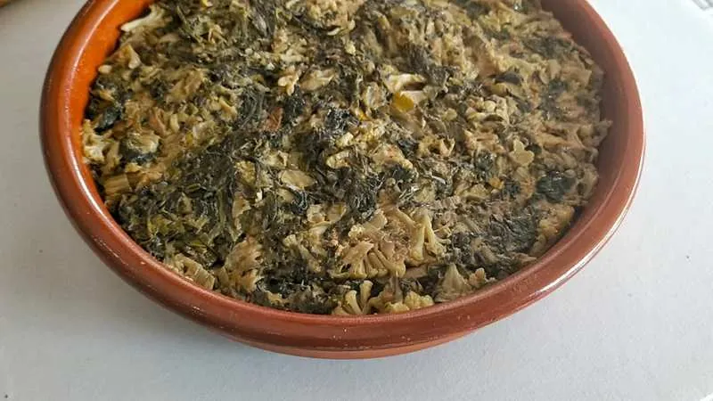
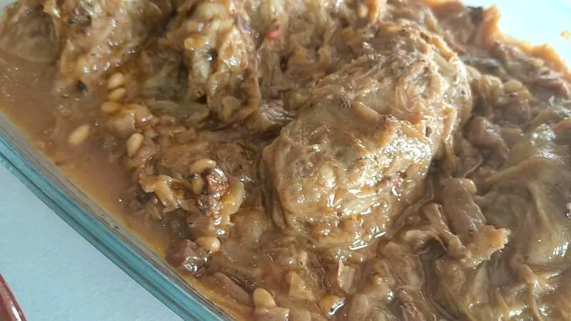
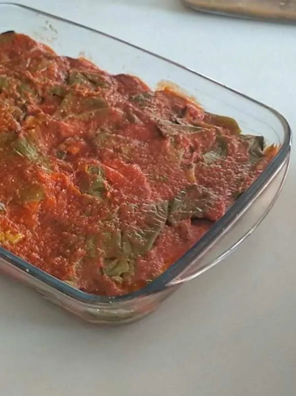
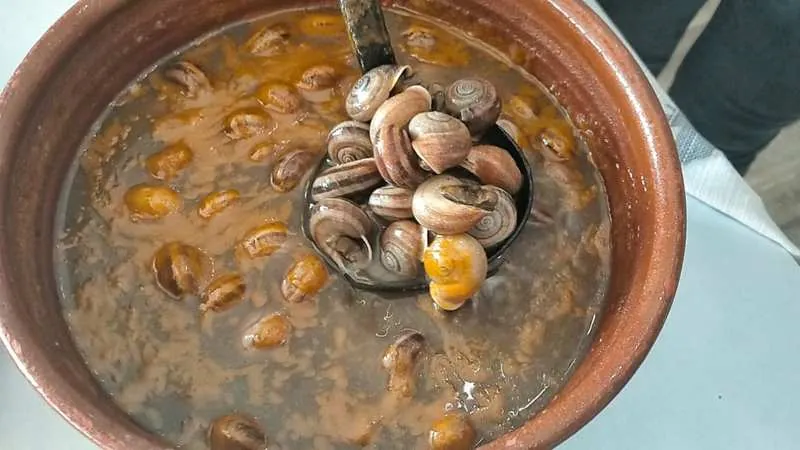

AL GUSTO - Comidas caseras para llevar y a domicilio
📅 2021-03-14📁 Mallorca, Restaurantes - Palma
Hoy os quiero hablar de Al Gusto, un local de comidas preparadas caseras en la zona del conservatorio de Palma.
Tienen una gran variedad de platos para llevar que van cambiando, así como una carta para comer en el local y un plato del día distinto todos los días a muy buen precio. También venden sobrasadas y patés ecológicos mallorquines de la marca Ferrerico.
Su especialidad son los pollos al ast con patatas, gracias a la receta secreta de Carmen, la propietaria y cocinera. Crujientes por fuera y jugosos a más no poder por dentro, un locurón.
Todos sus platos están elaborados con productos naturales frescos, sin colorantes ni conservantes artificiales de ningún tipo, y cocinados con aceite de oliva. Además siempre disponen de opciones saludables, así como de algunas vegetarianas o veganas.
Entre los platos que ofrecen se encuentran algunos muy típicos de la cocina mallorquina, como sopas mallorquinas, pica-pica de sepia, frito, tumbet o lomo con col. También tienen caracoles, berenjenas rellenas, croquetas, callos... así como paellas, fideuá y una infinidad de platos que, además, se pueden pedir por encargo.
Sopas mallorquinas
Lomo con col
Tumbet
Caracoles
Aunque los platos van variando, suelen ofrecer una serie de básicos algunos días a la semana, como algún potaje los martes, paella de algún tipo los jueves y lechona los viernes.
La lechona que utilizan es ecológica, y les queda especialmente rica. La sirven con patatas, y aunque las raciones son limitadas pueden reservarse con antelación por teléfono.
Ofrecen además un servicio de catering para grupos y eventos, bajo pedido y con al menos 1 o 2 días de antelación, dependiendo del número de personas y de los platos a elaborar.
También tienen postres caseros, y algo que me gusta especialmente es que suele haber al menos uno saludable y sin azúcar, normalmente edulcorado con eritritol, mi edulcorante preferido.
En definitiva, si estáis buscando un local de comidas preparadas rico, con comida casera y de calidad, con opciones saludables y servicio top os recomiendo que probéis Al Gusto, porque os va a encantar seguro.
https://www.youtube.com/watch?v=bfThkvvKM_U&t=12s
DATOS DE CONTACTO
Teléfono: 630 83 18 75
Dirección: Carrer d'Alfons el Magnànim, 63 - Palma (Mallorca)